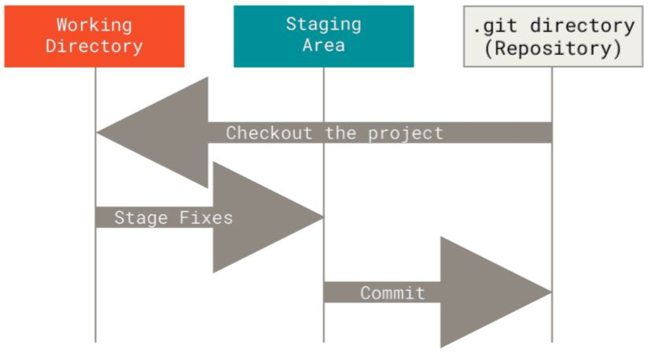
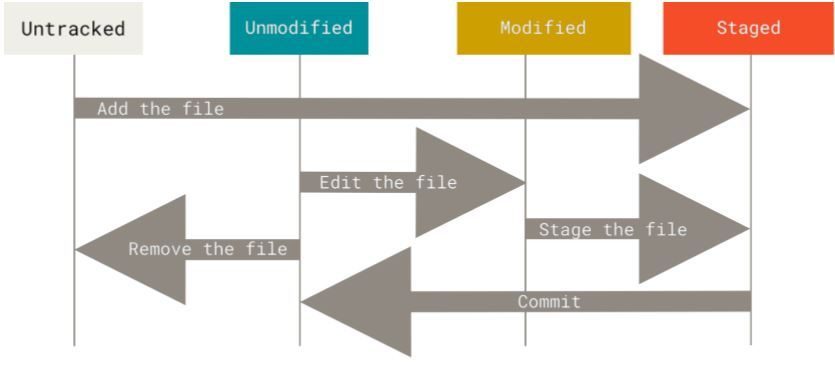

Initialisierung
$ git config --list --show-origin # Konfiguration anzeigen
$ git config --global user.name "Martin Beier"
$ git config --global user.email Martin.Beier@gmx.de
$ git config --global core.editor "'/usr/bin/vi' -b"
$ git config --list
user.name=Martin Beier
user.email=Martin.Beier@gmx.de
core.editor='/usr/bin/vi' -b
$ more ~/.gitconfig
[user]
name = Martin Beier
email = Martin.Beier@gmx.de
[core]
editor = '/usr/bin/vi' -b
$ git config core.editor
'/usr/bin/vi' -b
# man pages anzeigen
$ git help config
$ man git-config
$ git config --help
# Kurzinfo zu Optionen
$ git config -h
# Hilfe in https://freenode.net #git #github
Grundlagen Teil I
Die drei Zustände einer Datei:

# Repository anlegen: clone oder init $ git init # im Projektverzeichnis $ git clone <URL> # Dateien verwalten $ git add ... $ git commit --message "..." [...] $ git status ... [--short]
Die drei wichtigsten Teile eines Projektes: 
Grundlagen Teil II
Regeln für ein
.gitignore:
- Leere Zeilen und Zeilen beginnend mit # werden ignoriert
Branching
$ git branch <TICKET>